The typical working woman of the late nineteenth century needed their income for survival and occupied low-status positions as domestic servants. Others endured routine and often physically exhausting jobs in textile manufacturing. As a result, the image of a “working woman” had often been associated with notions of victimization and the failure or absence of a male breadwinner. However, by 1900, half a million women worked in offices as clerks, switchboard operators, and secretaries. As the century progressed, upwardly mobile women increasingly occupied professional careers in teaching and nursing as well as clerical jobs. In response, the image of the working woman began to change.
Figure 4.21
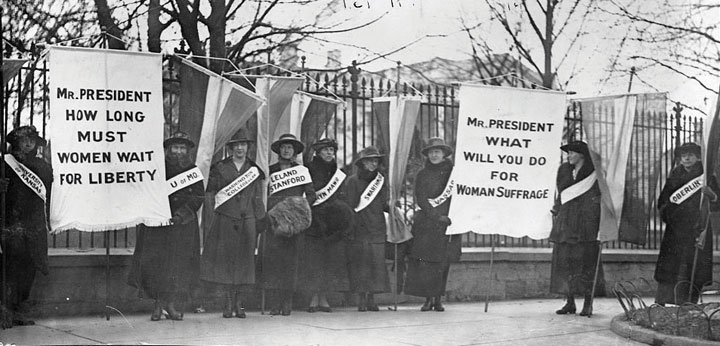Women representing leading women’s colleges such as Vassar join with women representing the University of Kansas, Stanford, and the University of Missouri in a protest outside the White House. A new generation of college-educated women led the suffrage movement as it gained momentum in the Progressive Era.
Middle-class women also joined organizations such as the National Association of Colored Women’s Clubs and the Women’s Christian Temperance Union. As a result, women were becoming engaged in community issues in larger numbers. As more women acquired formal education, entered the paid workforce, and became engaged in public life, they questioned the notion that the home was the only proper place for a woman. These challenges to the status quo were most evident in the growth of the women’s suffrage movement. The early 1900s saw a number of victories for the movement that were both a result and a cause of the increased education, upward mobility, and political activism of women during this era.
Figure 4.22
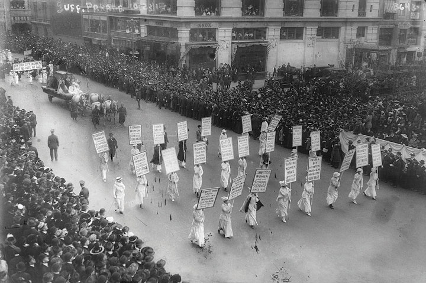This 1913 photo shows a parade of suffragists in New York City. Leading suffragists in the West began traveling to states such as New York that had not yet approved women’s suffrage.
The final victory of women’s suffrage in 1920 was only possible because of thousands of successful campaigns to secure the right to vote in school elections, city and county elections, and elections within a particular state. Women in Wyoming, Utah, Idaho, and Colorado had secured their right to vote statewide by 1900. Women in the state of Washington secured a referendum on women’s suffrage that was placed on the ballot in 1910. These women gave lectures and spread flyers throughout the state and convinced a majority of male voters to approve the measure. The following year, a similar effort resulted in the passage of a ballot initiative in California. Recognizing the tendency of male political leaders to jump on the women’s suffrage bandwagon once women in their districts could vote, the women of California recalled that after 1911, no male politician could be found in the entire state who had ever opposed the measure.
Many of the women who were drawn to the cause of suffrage had been active in the public sphere for a number of years before becoming suffragists. Like most Progressives, they focused most of their energies on the problems of urban and industrial America. The condition of workers and the urban poor formed the vanguard of the movement, with numerous Progressive organizations pressing for laws that would limit the maximum number of hours women could be required to work. Both the architect and object of these protective laws, women led the rank-and-file membership of these movements. They also led countless local initiatives and were more likely to occupy leadership roles within civic organizations than any previous era in US history.
By 1900, several million women were already active within local suffrage movements. Millions more would join the National American Women’s Suffrage Association in the next decade. For most women, however, the road to becoming a suffragist began with a particular reform that placed them in the public sphere. The same was true of men within the Progressive movement, many of whom gradually came to support women’s suffrage as a tactical goal to promote a specific reform such as Prohibition. A few years of actively promoting a public cause tended to transform Progressive men and women from relative indifference regarding the suffrage question to supporting votes for women to more effectively pursue their own reform agenda. Before long, Progressive women and men began to support women’s suffrage on its own merit as part of the larger crusade for social justice.
Although suffrage remained controversial, Progressives generally avoided social taboos. For example, few Progressives supported the efforts of Margaret SangerA nurse who was originally from the state of New York, Sanger toured internationally promoting the legalization of contraceptive methods and was the founder of Planned Parenthood. to discuss “birth control.” Sanger was a nurse who did not invent the methods she discussed, but she was among the first to publicly breach the social taboos regarding the subject of birth control. A handful of Socialist journals were among the first to print her articles. However, by 1914, Sanger was publishing her own serial publication titled the Woman Rebel. Because this journal was distributed through the US mail, it was subject to the Comstock Laws, which banned the circulation of “obscene” material. At the time these laws were passed and throughout the early decades of the twentieth century, spreading information regarding contraception was considered indecent. It was even subject to state and local penalties. After fleeing to Europe, Sanger returned to the United States and opened a women’s clinic that distributed diaphragms. She also spread information suggesting that a woman should both enjoy sexual relations and control her body’s reproductive system.
Arrested for promoting ideas and methods that offended the sensibilities of many social conservatives and Progressives alike, Sanger quickly became notorious as the leading public advocate of birth control. Her infamy led to the spread of information regarding birth control by both her supporters and critics. Newspapers throughout the nation discussed the issue, although her detractors often used creative methods to avoid printing details about the subject. In 1921, Sanger formed the American Birth Control League. Sanger was also active in poor and immigrant communities she identified as being vulnerable to unwanted pregnancies.
Sanger’s choice to focus on these communities was influenced by the fact that wealthy women were usually able to secure these same services discreetly. In addition, Sanger’s clinics were able to operate beyond the public eye in poor communities. Some immigrants perceived that the efforts of some birth control advocates in their communities were directed at reducing their numbers, a selective form of population control. Scholar Harriet Johnson’s provocative book Medical Apartheid demonstrates the ways that birth control and other medical experiments regarding fertility were used against African American communities in these years and beyond. For most African American women and men of the early 1900s, however, their most immediate concerns were economic discrimination and the spread of Jim Crow.
Among a number of prominent black leaders at the turn of the century, two men came to represent two different perspectives regarding the challenges faced by black America. W. E. B. Du BoisA leading intellectual and a professor at Atlanta University, William Edward Burghardt Du Bois was also a civil rights leader who founded the Niagara Movement and was the leading black member of the early NAACP. He combatted racism in all of its forms and was a leading proponent of Pan-Africanism. was the first African American to receive a PhD from Harvard University. As a Northerner, and especially as a wealthy and well-educated member of the black upper class, Du Bois advocated for equality of opportunity in education and other endeavors. He believed any accommodation to segregation or white supremacy, even to achieve tactical gains such as better schools or opportunities for black workers, was contrary to the best interests of the race if these concessions required the acceptance of segregation. In 1903, Du Bois published the Souls of Black Folk, which included a chapter that challenged the views of the most famous black American at this time, Booker T. WashingtonThe most famous African American of his era, Booker T. Washington was the founder and president of Tuskegee Institute in Alabama and the leading fundraiser for black schools and colleges in the early twentieth century. Washington was criticized as accommodating segregation as part of a tactical maneuver to gain support for basic education and job training skills for African Americans. At the same time, Washington also supported a number of black liberal arts colleges and secretly provided funds for some early civil rights initiatives.. Du Bois believed that Washington had no right to speak for all black Americans. He also believed that Washington accommodated white supremacy by accepting segregation in a mistaken attempt to foster goodwill among Southern whites.
Figure 4.23
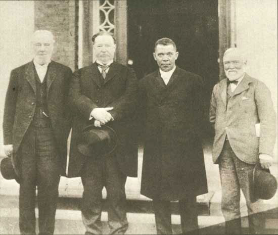Booker T. Washington was an effective fundraiser for African American schools and colleges in a time period when public funds were directed towards white-only schools. He is pictured here with philanthropist Robert C. Ogden on the far left, Secretary of War and future president William Howard Taft to the left of Washington, and Andrew Carnegie on the right.
Washington had risen from a childhood working in the salt mines of West Virginia to becoming the most famous black educator in America. He transformed a one-room school in Tuskegee, Alabama, into a college that prepared thousands of black women and men for careers in education and industry. Perhaps most impressive, Washington achieved this feat by securing funding from the all-white state legislature of Alabama.
In 1895, Washington was asked by the directors of the Cotton States Exposition in Atlanta, Georgia, to deliver a speech that would demonstrate to the world that race relations in the South were stable. Washington understood that these leading white Southerners were motivated by a desire to attract investment to the region by minimizing the importance of racial discrimination, but he saw the speech as an opportunity to demand fair treatment. Calling on whites to treat black workers with more fairness, Washington offered acceptance of segregation in exchange for humane treatment and a commitment to equal funding for black schools and better job opportunities for black workers. At this time, schools for Southern black children received only a third to a quarter of the funds allocated for white children. African Americans in the South understood Washington’s tactical approach, and many applauded his efforts to find any way to increase funding for black schools and greater job opportunities. These individuals were more concerned about building better schools and black-owned businesses than the “privilege” of attending classes alongside white children. Others disagreed, labeling Washington’s speech the Atlanta CompromiseAn 1895 speech given by Booker T. Washington at the Cotton States International Exposition in which he proposed an acceptance of separate institutions for whites and blacks so long as African Americans were given greater opportunities for education and jobs. and Washington’s willing acceptance of segregation under any terms as accommodation to white supremacy.
The juxtaposition of the ideas and perspectives of Booker T. Washington and W. E. B. Du Bois provides a starting point for understanding the ideas and challenges faced by black leaders at this time. Early civil rights activists discussed the merits of both conservative and radical ideas and tactics. These debates were printed in scores of black newspapers, providing historians a wealth of primary sources that demonstrate the intellectual vibrancy of the communities they served. Conservatives such as Washington sought gradual change and tactical goals like equal funding for separate schools. Radicals such as Du Bois opposed such tactics in favor of lawsuits challenging segregation.
Radicals and conservatives also differed on topics such as the creation of vocational training schools. Conservatives recognized that such training would prepare men and women for jobs as laborers, but radicals feared that these institutions might discourage black Americans from pursuing other forms of higher education. However, one must remember that someone who was generally radical or conservative could often support both tactical approaches. For example, Washington secretly diverted money to finance civil rights lawsuits from funds he had secured from paternalistic whites who intended to support programs that would train black men for jobs as laborers. At the same time, Du Bois had tremendous respect for the work done by black trade schools and recognized that Washington was very effective as a fundraiser for these kinds of schools.
While Washington looked towards vocational training and practical education programs, Du Bois believed racial equality was predicated upon the leadership of black men and women who had acquired higher education and leadership skills. He referred to these African Americans as “the talented tenth,” and emphasized his belief that the advancement of all societies was based on a similar percentage of well-educated innovators and leaders. Du Bois rejected the notion that black colleges should focus only on vocational skills. He worked with other professors to maintain a rigorous academic program at Atlanta University (Clark Atlanta University today) where he taught history and sociology.
In 1905, Du Bois called for a meeting of back leaders to create a national civil rights organization. Many historians believe the group intended to meet in Buffalo, New York, until the hotels of that city refused accommodations to these men. Others question this assumption, pointing out that hotels in Northern cities were usually willing to accommodate wealthy African American leaders when they traveled. The group stayed in nearby Niagara, and their organization became known as the Niagara MovementAn African American civil rights organization formed along the New York–Canada border by W. E. B. Du Bois and other black leaders in 1905. . The group had little difficulty finding accommodations in eastern West Virginia for their second annual meeting at Harper’s Ferry, the site of John Brown’s historic rebellion against slavery. By 1909, the women and men of the Niagara Movement helped to create the National Association for the Advancement of Colored People (NAACP).
Figure 4.24
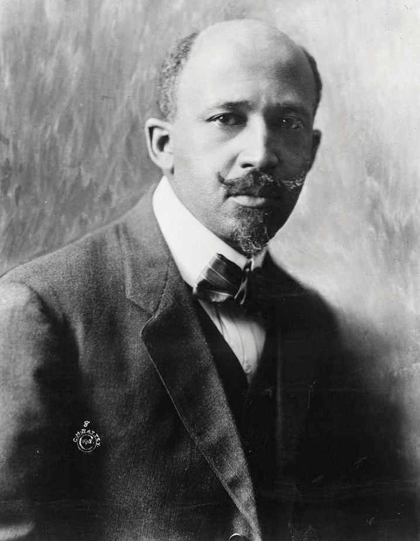W. E. B. Du Bois believed that Booker T. Washington’s acceptance of segregation was unacceptable, even as a tactical maneuver to secure more funds for black schools. Du Bois initiated a national civil rights organization known as the Niagara Movement in 1905.
Du Bois also sought to correct the historical image of race and slavery that was created by white scholars during this era. Scouring the archives for primary sources, such as letters written by former slaves to former owners, white historians sought to validate the popular image of the contented slave. The letters of thousands of slaves were scoured for a single sentence that might be cited to prove that they had been well treated or had kind memories of their previous life in bondage. Given the millions of individuals who had been enslaved, the peculiarities of nostalgia and memory, and the power of institutions such as family and community, these historians found many examples of positive memories. They often cited these examples out of context to further their quest to vindicate the “peculiar institution” of American chattel slavery. Du Bois confronted this historical ventriloquism by collecting sources of African Americans along with other black scholars such as Carter Woodson. Together, they and other historians published journals and books that presented the perspectives of African Americans.
The last term of an African American congressman expired in 1901. No black American would serve in Congress again until Chicago’s Oscar De Priest in 1929. In most areas of the South, the only way blacks could vote was with their feet. An estimated 200,000 African Americans demonstrated this last measure of agency by migrating to the North between 1890 and 1910. A million and a half more would abandon the South in the next two decades, a phenomenon known as the Great Migration by historians.
Without the right to vote in the South where 90 percent of African Americans still lived in 1910, the opinions of blacks could be ignored with impunity by national political leaders such as Roosevelt or Taft. Roosevelt demonstrated his lack of concern for the perspective of black Americans by issuing a dishonorable discharge of three companies of black infantry after a violent incident that occurred in 1906 between white civilians and a group of black soldiers in Brownsville, Texas. Neither the army nor the president gave the soldiers an opportunity to defend themselves through a court martial. In fact, there was barely any investigation of the incident. The majority of those discharged had no connection to the altercation whatsoever as they had remained on post on the day the conflict occurred.
The black vote was important in many Northern cities and might often make the difference in local and state elections. However, from the perspective of national politics, the black population outside the South represented only 1 percent of the total population at the turn of the century. As a result, neither party felt compelled to make the needs of African Americans a priority if doing so risked losing votes in the white-only elections of the South. Although critical in local elections in many cities, the Republican Party took black electoral support for granted in national elections, and Democrats rarely even bothered meeting with black leaders. In the decades following Reconstruction, the Republican Party shifted from fighting the racism of Southern whites to accommodating it in an attempt to broaden their electoral base among whites. Although black leaders found few alternatives to supporting the Republicans as long as the Democrats remained the party of white supremacy, in future decades, a new generation of Democratic leaders would begin to court black voters.
Similar to “liberal” issues such as women’s suffrage, Progressives were more likely to support moderate civil rights reforms and antilynching legislation. However, some white Progressives actively supported the enactment of segregation laws because they accepted the tenets of white supremacy and thought such laws would reduce racial friction. Yet to discard the entire Progressive movement as racially conservative would be to ignore the growing black middle class who supported the ideas of the Progressives and worked to frame racial equality within the era’s campaigns for social justice.
Figure 4.25
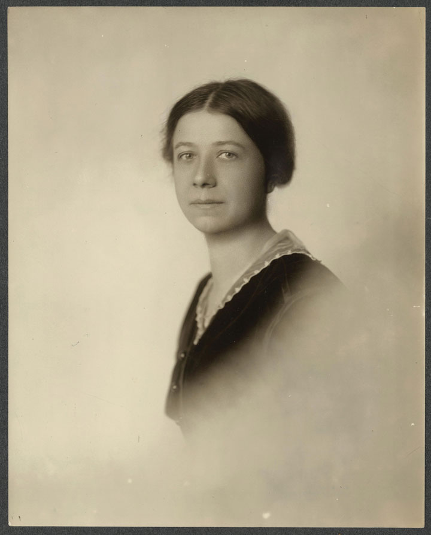Mary Ritter Beard and her husband Charles Beard were two of the leading historians in the early twentieth century. Mary Ritter Beard was also active in the women’s suffrage movement and was a lifelong advocate of social justice and women’s education.
Although the Fourteenth Amendment was intended to protect African Americans from violations of their rights as citizens, the Supreme Court had declared that segregation was consistent with the amendment and with its 1896 decision in Plessy v. Ferguson. In the early 1900s, the court interpreted “due process of law” to protect corporations. Meanwhile, less than a handful of individuals were ever convicted in response to the annual lynching of several hundred African Americans. Black leaders such as Ida Wells lobbied on behalf of a federal antilynching law. Although more than two hundred bills that would have made lynching a federal crime were introduced, only three ever passed the House of Representatives. None of these bills ever became law due to the united opposition of white Southern Democrats.
During the 1930s, singer Billie Holiday recorded a chilling ballad reminding the nation that “Southern trees bore strange fruit.” However, few whites North or South chose to speak out on the issue of lynching because of the assumption that most victims of lynch mobs were guilty of committing rape. In this and countless other ways, historians Mary Ritter Beard and Charles Beard observed, any support of even the most basic civil rights for African Americans “had become bad form in the North.” While the Beards and others explored race beyond the Mason-Dixon Line, a growing number of black scholars exploded the myth that lynching was connected to crimes against women. Instead, they argued that lynching was a collective display meant to bolster white supremacy and vent feelings of rage against a despised “other.” They believed that black victims, whether innocent or guilty of any crime, served as a scapegoat for the personal failures of those who participated in the mob killings.
Expressions of this brand of rage became commonplace, and hundreds of Northern trees were stained by the same blood that ran in the South. Lynchings in the North and West often resulted in a trial, but the perpetrators were seldom convicted of their crimes. North and South were not so different in this regard, nor were they different when it came to a different kind of violence—the daily execution of black ambition. “Why do we send our children to high schools and academies,” a black educator asked, only “to earn $1.50/day cleaning the sewers?” By focusing nearly exclusively on the most obvious manifestations of racial violence, historians have sanitized the violence of miseducation. By excluding black perspectives and ignoring the history and culture of nonwhites, schools reinforced the assumption of white supremacy. Equally disturbing is the fact that the creation of the color line in thousands of Northern and Midwestern communities has been expunged from the historical record. Most US communities maintained formal or informal systems of segregated schools. For example, school board records throughout Kansas, Iowa, Nebraska, and Illinois record the existence of “colored schools” in nearly a hundred towns. However, textbooks that teach the history of these states do not include any of these examples beyond the famous Topeka case of Brown v. Board of Education. Some even incorrectly assure their young readers that the schools of their states were always racially integrated.
A small but growing number of historians are challenging the notion that black history was limited to the South during these years. They also challenge the notion that civil rights activism was unique to the 1950s and 1960s. Although national leaders such as Booker T. Washington may have at least superficially adopted a strategy of conciliation, historians are now turning the lens of local history to challenge the notion that the other 8 million African Americans who lived during the “nadir of race relations” wore the same mask. This change in perspective from national to local is challenging historic interpretations and revealing the complexity of an era that saw a dramatic rise in black education and entrepreneurial ventures that coincided with an increase in racial violence.
Historians have recently uncovered dozens of civil rights cases involving schools, restaurants, hotels, theaters, riverboats, railroads, and even elevators during every year of the early 1900s. In about a third of the cases that have been discovered in the Midwest, the black plaintiffs won. The number of lawsuits declined over time because the results rarely justified the effort. Penalties for violators were usually minimal, and any compensation paid to the plaintiff was often insufficient to cover the expense of taking the case to court. However, sources indicate that the possibility of being sued for discrimination reduced the tendency for whites in states with civil rights laws to practice at least the most overt forms of discrimination.
Figure 4.26
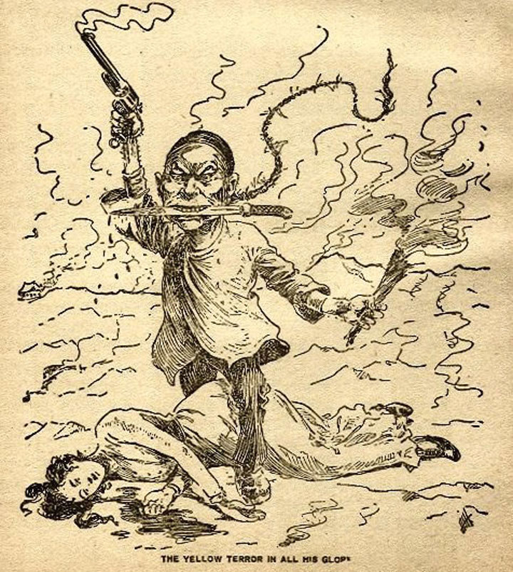Many US newspapers utilized a variety of negative stereotypes to depict Asian immigration as a threat to America. While most presented the idea that immigrants would take jobs away from “native Americans,” some presented the immigrants themselves as a threat.
America’s relationship with its empire reflected a variety of competing ideas regarding race, science, and culture. Many Americans embraced OrientalismThe imitation of Eastern art and culture by Westerners., the practice whereby people in the Western Hemisphere appropriated Eastern art, music, literature, and culture to fit their own preconceived ideas of Asia and Asians as “exotic.” Just as some Americans sought to romanticize the meaning of Native American history and experience without truly understanding the perspectives of Native Americans, an imagined “Oriental” culture became fashionable among middle and upper-class Americans seeking authentic experience beyond their own material affluence.
Others tried to prove the existence of innate racial differences using a pseudoscience called eugenicsA pseudoscientific field of study that is based on the idea that human evolution can be facilitated by preventing the reproduction of inherently inferior peoples.. Eugenicists sought to demonstrate that lighter-skinned races were more evolved. They used techniques that appeared to be scientific, such as measuring the size of brains. Of course, the relatively obvious agenda of eugenicists, who conducted “research” to validate their own predetermined conclusions about white supremacy, made most academics doubt the integrity of eugenics as a scientific discipline. Even during the early 1900s, most scientists distanced themselves from the eugenicists, even if they shared many of their racial assumptions.
Figure 4.27
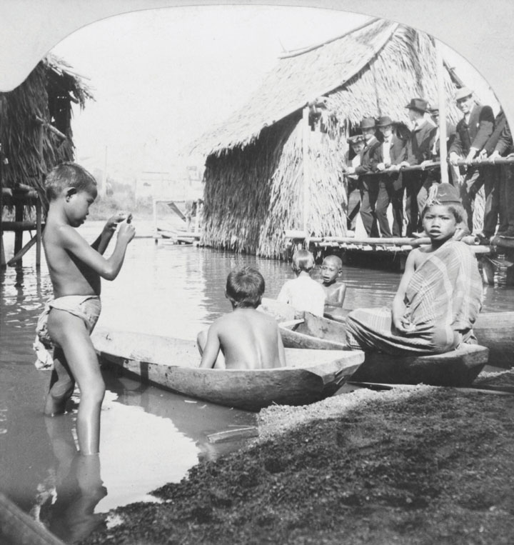Filipinos were placed on display during the 1904 World’s Fair in St. Louis. A different US city hosted a World’s Fair nearly every other year, and each featured similar exhibits of indigenous peoples. These displays often mixed the paternalism of their organizers with the agency of their “performers.” The result was a mixture of genuine displays of indigenous culture and life within a Eurocentric cabaret that assumed the “backwardness” of other civilizations.
This form of scientific racism reached its peak during the 1920s. However, it may have never been more clearly celebrated than at a living display of “primitive” races during the 1904 St. Louis World’s Fair. The purpose of the exhibit was to show that the indigenous peoples of the Philippines were progressing under the tutelage of the federal government. When it arrived in the Philippines in 1898, the US military appropriated existing police forces that were then employed to pacify those who resisted American occupation. The 1904 display juxtaposed these uniformed men against various “primitive” peoples such as the “Moros” who practiced Islam and the “monkey-like Negritos” who were practically naked.
The intended message of Filipino inferiority may have worked too well. The federal government, future president William Howard Taft, and even President Roosevelt intervened when it became clear that fairgoers were leaving the “Congress of Races” believing that the Filipinos were too primitive to ever become civilized. A cartoon published in a local newspaper showing President Roosevelt attempting to place trousers on the Filipinos was merely a comic expression of the actual efforts to micromanage the display and present the desired message of the US government regarding its empire. As historian Robert Rydell has shown, correspondence of President Roosevelt’s private secretary includes concerns that the appearance of men wearing “a mere G string” did not support the government’s message about the Philippines. “If fairgoers perceived the villagers as utterly backward and incapable of progress,” Rydell explains, “the displays would actually buttress the racists’ arguments used by anti-imperialists to oppose annexation of the islands.”
Figure 4.28
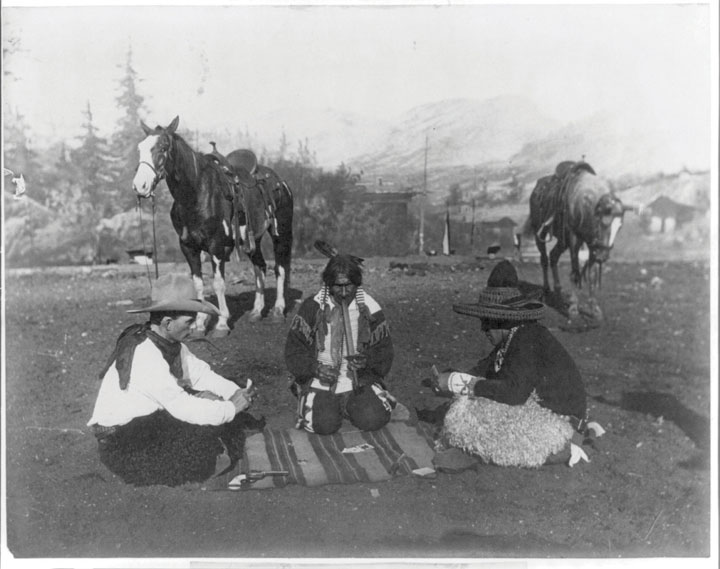The Southwestern Borderlands were always a melting pot and a center of ethnic and cultural conflict. In this image, an Anglo cowboy plays cards with a Native American and a migrant from Mexico.
While Filipinos and most other residents of overseas US possessions would not be eligible to migrate to the United States at this time, migration from Latin America, the Caribbean, and South America was not restricted by law or quotas. The Newlands Act of 1902 spurred migration, as millions of acres of Southwestern land came under cultivation due to federal irrigation projects. In 1904, a railroad connecting Brownsville and the rest of the Rio Grande Valley with Corpus Christi was completed. The railroad signaled a sudden influx of Anglo land speculators and family farms in what had been an area dominated by Mexican haciendas (large estates) and the vaqueros (cattlemen).
The total population of Texas’s Rio Grande Valley quadrupled between 1900 and 1930. The population increase was fueled by the migration of Anglo and African American land seekers as well as field laborers from Mexico. Three hundred thousand Mexicans entered the United States between 1910 and 1920, most fleeing political and economic turmoil during a series of revolutions and civil wars in Mexico. While the vast majority of Mexicans were drawn to the United States by the promise of steady employment, about 20 percent were professionals, landowners, or skilled laborers who feared reprisal for their connection to the former Mexican President Porfirio Diaz. By 1920, recent immigrants from Mexico comprised 12 percent of the California population. A decade later, nearly a million people and approximately 7 percent of the entire population of Mexico had migrated to the United States.
Figure 4.29
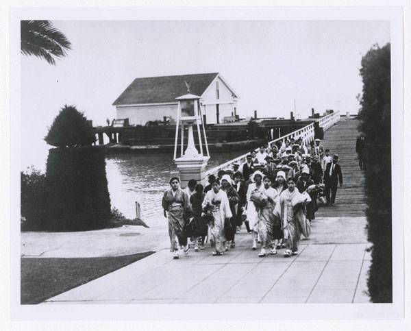Asian immigrants entering the United States from Angel Island, a processing center in San Francisco Bay that served a similar function as New York City’s Ellis Island.
Although nativists were beginning to organize against the migration of Mexican laborers, the strongest nativist opposition in the West was waged against Asian immigrants. In 1905, nativists and local labor unions in San Francisco established the Asiatic Exclusion League. Among the goals of this organization was the expansion the Chinese Exclusion Act of 1882 to prevent the migration of Japanese and Korean families to the United States.
Similar sentiments and the famous 1906 San Francisco earthquake, which destroyed many of the city’s schools, led the San Francisco Board of Education to expand their system of segregation. Responding to native sentiment, the board barred students of Japanese and Korean descent from their neighborhood schools and required them to attend separate schools that had previously been established for Chinese students. In addition to the hardships this created for families that lived all over the city, Japanese Americans protested the board’s action for its obvious symbolic meaning. Local protests were soon joined by international outrage. In addition to concerns regarding segregation, Japanese leaders protested their children’s restriction to schools with Chinese students given the long-standing tensions between the two nations.
Japan had just defeated Russia in the 1905 Russo-Japanese War and believed that the school board’s decision was an affront to the international honor of their nation. President Roosevelt had served as the architect of the peace treaty between Russia and Japan, which was signed in New Hampshire. As a result, Roosevelt held the Japanese in high esteem and feared that angering the increasingly powerful nation of Japan would derail US efforts overseas. Because of these geopolitical concerns, the federal government intervened in hopes of maintaining diplomatic relations and trade with Japan.
At the same time, nativist sentiment in the United States demanded that the exclusionary laws barring Chinese immigration be extended to Japan and Korea. In an effort to appease these sentiments without further alienating Japan, diplomats and political leaders agreed to a secret compromise. The federal government agreed it would not ban Japanese migration in exchange for a promise by the Japanese government to deny visas for all Japanese wishing to immigrate to the United States. In addition, the federal government persuaded the San Francisco school board to limit segregation to Chinese children. The key to the agreement was that it was unofficial, allowing the Japanese government to officially proclaim that its citizens were welcome to migrate to the West, and they simply chose not to do so. As a result, the informal pledge was known as the Gentleman’s Agreement of 1907The name given to an informal pact between US and Japanese officials in 1907. The United States agreed to not explicitly ban Japanese migrants from entering the United States (as it had Chinese migrants) so long as Japan prevented its citizens from migrating to the United States..
Laws barring Chinese migration allowed sons (but not daughters) of Chinese migrants to also enter the United States. The goal of this law was to permit a small number of family members and laborers to still come to the United States, while preventing the creation of a self-sustaining and permanent Chinese population. A similar but informal agreement allowed the family members of Japanese Americans who already lived in the United States to also migrate to America. Ironically, a fire caused by the San Francisco Earthquake also destroyed many public records. As a result, a significant numbers of migrants arrived claiming to be related to Asian Americans who had arrived earlier and obtained citizenship. Many of the Chinese male immigrants were known as “Paper Sons” because they had arrived bearing records claiming lineage to men that may or may not have been their actual fathers.
By 1905, a million immigrants from Italy, Greece, Russia, and the Balkans of South Central Europe were arriving in the United States each year. Many of these immigrants were Jewish refugees who fled the latest wave of pogromsA series of attacks on Jews in Russia at the turn of the century that were intended to eliminate the Jewish population of Russia. The pogroms led to significant Jewish migration to the Untied States.—the anti-Semitic attempts at ethnic cleansing in Russia. Some Russian leaders sought to completely purge their empire of its Jewish population during the late nineteenth and early twentieth centuries. These attacks escalated between 1903 and 1905 and resulted in hundreds of thousands of Jewish immigrants entering the United States between these years. By the early 1920s, an estimated 2 million Jews were living in the United States.
Figure 4.30
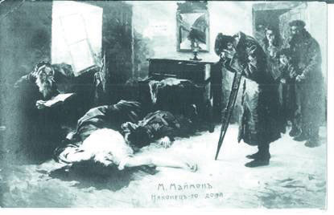“Back in the Homeland” by Moshe Maimon. Maimon was a Jewish artist whose work often depicted the violent attacks on Jews in Russia which were known as pogroms.
The majority of these migrants lived in major East Coast cities such as New York, Philadelphia, and Baltimore. However, sizeable Jewish communities were also created in Midwestern towns and Southern port cities such as Galveston, Texas. Prominent Jewish leaders such as Jacob Schiff founded the American Jewish Committee as part of a larger movement to confront anti-Semitism and create a support network for the new arrivals. After a mob in Atlanta seized and lynched a Jewish man who had been accused of rape, Jewish activists and supporters in the United States formed the Anti-Defamation League (ADL)The leading Jewish civil rights organization in the United States, the ADL was founded in 1913 in the wake of a lynching of a Jewish American man in Atlanta..
The core membership of the ADL in its early years were leaders and members of a Jewish fraternal organization known as the Independent Order of B’nai B’rith. This organization had been formed in the United States prior to the Civil War. Anti-Semitism had existed in the United States since the colonial period, but the relatively small numbers of Jews prior to the turn of the century had mitigated the expression of these prejudices. Due to the rapid increase in the number of American Jews, as well as the success of several high-profile Jewish bankers and the proliferation of local Jewish merchants, the old stereotypes and prejudices that had plagued Jews in Europe and Russia began to appear with greater frequency and intensity in their new country. During the 1920s, the United States would enact quotas designed to curb the number of Jewish migrants and other groups from central and Southern Europe. By the time of the Holocaust, anti-Semitism was so strong that efforts to temporarily waive these immigration restrictions and provide sanctuary for European Jews were derailed until the final year of World War II.
Figure 4.31
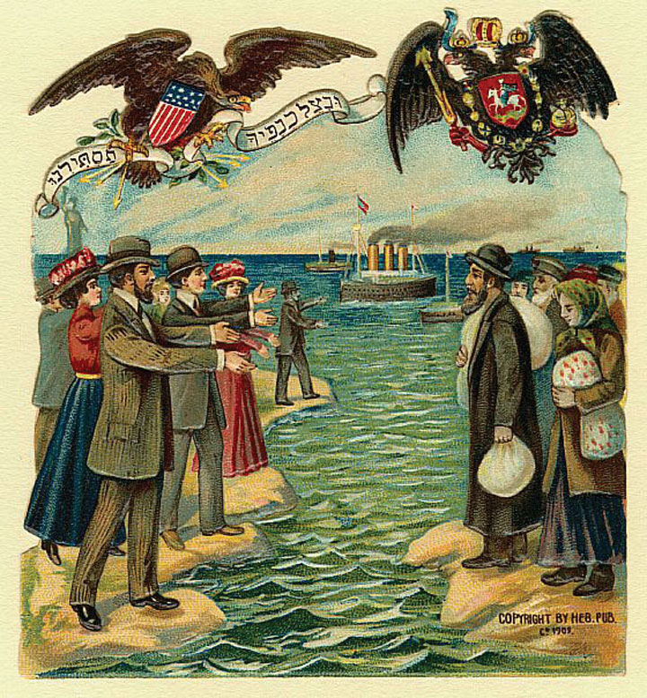Migration from Europe and Russia to the United States was facilitated by American Jews who provided physical shelter for the immigrants while also shielding the newcomers from anti-Semitism in America.
While Jews faced stereotypes associating them with greed and capitalistic avarice, other immigrants arriving during these years were often typecast as impoverished vagrants. In reality, immigrants were rarely the poorest residents of their homelands due to the prohibitive costs associated with traveling to the United States. Many of the new arrivals settled within ethnic clusters located in major cities—a tendency that was both the product of prejudice and the source of allegations that the newcomers were “clannish” and did not want to learn English or assimilate into the larger society. As a result, immigrants and immigrant communities were frequently portrayed as “un-American.” In reality, these communities celebrated their new homes and sought to incorporate American culture into their traditions. These communities functioned as a mediating institution between the two cultures and prevented newcomers from experiencing a sudden and complete break with their own heritage and identity.
The most obvious forms of hostility to the new immigrants were usually motivated by economic concerns. For example, a group of Greek workers were hired in Omaha as strike breakers during a series of labor conflicts involving the city’s beef-packing industry. An unrelated killing involving a spurned lover’s jealousy against a Greek man who was living with a “white” woman set off an explosion of anger in February 1909. By this time, existing prejudices against the city’s expanding Greek community led to a series of editorials blaming low wages and crime on the residents of the Greek neighborhood. A mob of several thousand gathered in favor of a petition to rid Omaha of “filthy Greeks” in the wake of the killing. After an hour of impassioned speeches, including an emotional appeal of the brother of the man who had been shot by a Greek resident during the lover’s quarrel, the mob converged on the Greek neighborhood.
Figure 4.32
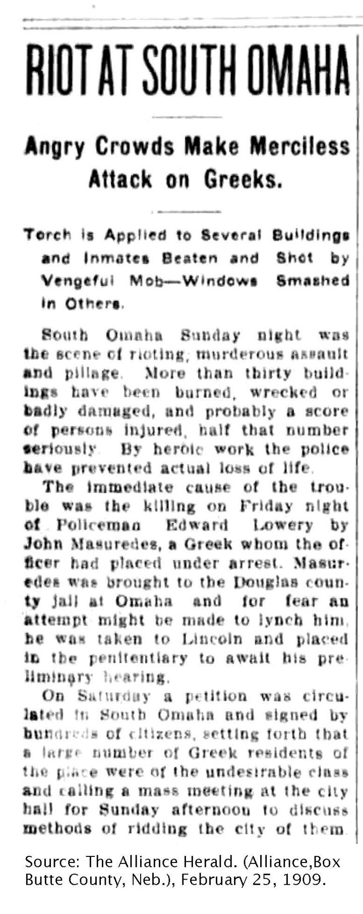One of many newspaper reports of the attacks against Greek workers in the beef-packing district of South Omaha during the anti-Greek Riot of 1909.
The resulting Anti-Greek Riot of 1909An attack on the entire Greek population of Omaha, Nebraska, that led over a thousand Greek Americans to flee the city and inspired similar attacks on Greek immigrants in other factory and beef-packing towns. led to a mass exodus of Omaha’s 1,200 Greek residents. It also touched off similar race riots directed against Greek migrants in other communities such as Dayton, Ohio. One observer recalled that the “Americanism” of many mob members was “of recent origin,” pointing to the irony that many of the participants were recent immigrants themselves. Regardless of their own status, “all felt the deeper thrill when the eloquence was poured forth,” the observer recalled, because “they were not Greeks.” “The fact that they were different from the Greeks was enough to make a common bond for that particular brotherhood,” the observer concluded, “especially when it became clear that the Greeks were to be attacked and pillaged and that the assailants might enjoy the strength that comes from union.”